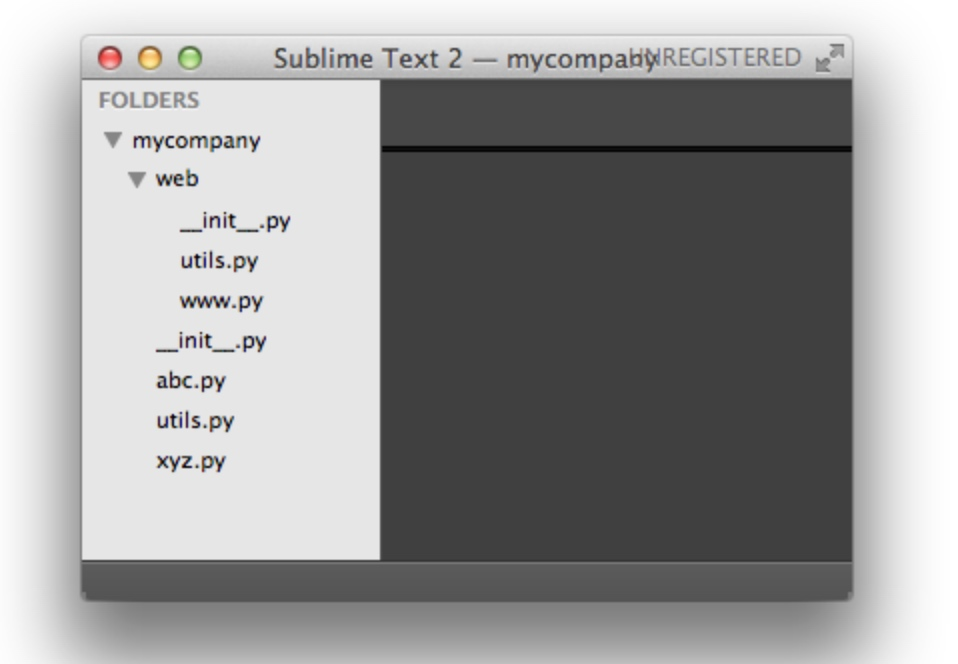

模块介绍
python中的文件关联模块和java语言类似，一个abc.py的文件就是一个名字叫abc的模块，一个xyz.py的文件就是一个名字叫xyz的模块。
现在，假设我们的abc和xyz这两个模块名字与其他模块冲突了，于是我们可以通过包来组织模块，避免冲突。方法是选择一个顶层包名，比如mycompany，按照如下目录存放：

引入了包以后，只要顶层的包名不与别人冲突，那所有模块都不会与别人冲突。现在，abc.py模块的名字就变成了mycompany.abc，类似的，xyz.py的模块名变成了mycompany.xyz。
请注意，每一个包目录下面都会有一个__init__.py的文件，这个文件是必须存在的，否则，Python就把这个目录当成普通目录，而不是一个包。__init__.py可以是空文件，也可以有Python代码，因为__init__.py本身就是一个模块，而它的模块名就是mycompany。
类似的，可以有多级目录，组成多级层次的包结构，比如如下的目录结构：

模块的使用
Python本身就内置了很多非常有用的模块，只要安装完毕，这些模块就可以立刻使用。
我们以内建的sys模块为例，编写一个hello的模块：
# -*- coding: utf-8 -*-
'a test module'
_author_ = '梁中豪'
import sys
def test():
args = sys.argv
if len(args)==1:
print 'Hello ,world!'
elif len(args)==2:
print 'Hello ,%s!' % args[1]
else:
print 'Too many arguments!'
if __name__=='_main_':
test()
第1行注释表示.py文件本身使用标准UTF-8编码；
第4行是一个字符串，表示模块的文档注释，任何模块代码的第一个字符串都被视为模块的文档注释；
第6行使用__author__变量把作者写进去，这样当你公开源代码后别人就可以瞻仰你的大名；
以上就是Python模块的标准文件模板，当然也可以全部删掉不写，但是，按标准办事肯定没错。
后面开始就是真正的代码部分。
使用sys模块的第一步，就是导入该模块：import sys
导入sys模块后，我们就有了变量sys指向该模块，利用sys这个变量，就可以访问sys模块的所有功能。
sys模块有一个argv变量，用list存储了命令行的所有参数。argv至少有一个元素，因为第一个参数永远是该.py文件的名称，例如：
运行python hello.py获得的sys.argv就是['hello.py']；
运行python hello.py Michael获得的sys.argv就是['hello.py', 'Michael]。
最后，注意到这两行代码：
if __name__=='__main__':
test()
当我们在命令行运行hello模块文件时，Python解释器把一个特殊变量__name__置为__main__，而如果在其他地方导入该hello模块时，if判断将失败，因此，这种if测试可以让一个模块通过命令行运行时执行一些额外的代码，最常见的就是运行测试。
可以启动python交互环境，导入hello模块来测试下：
$ python
Python 2.7.5 (default, Aug 25 2013, 00:04:04)
[GCC 4.2.1 Compatible Apple LLVM 5.0 (clang-500.0.68)] on darwin
Type "help", "copyright", "credits" or "license" for more information.
>>> import hello
>>> hello.test()
Hello, world!